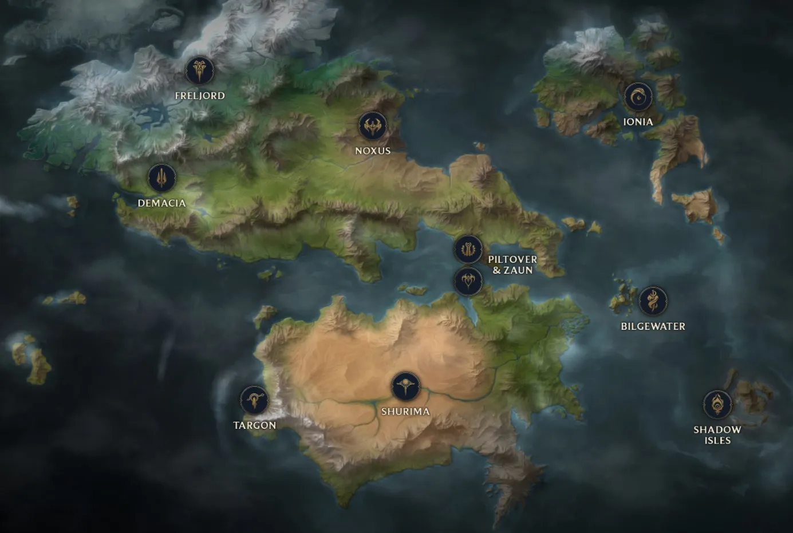
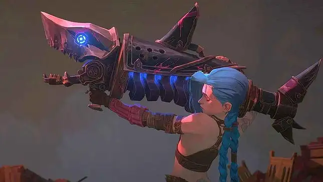
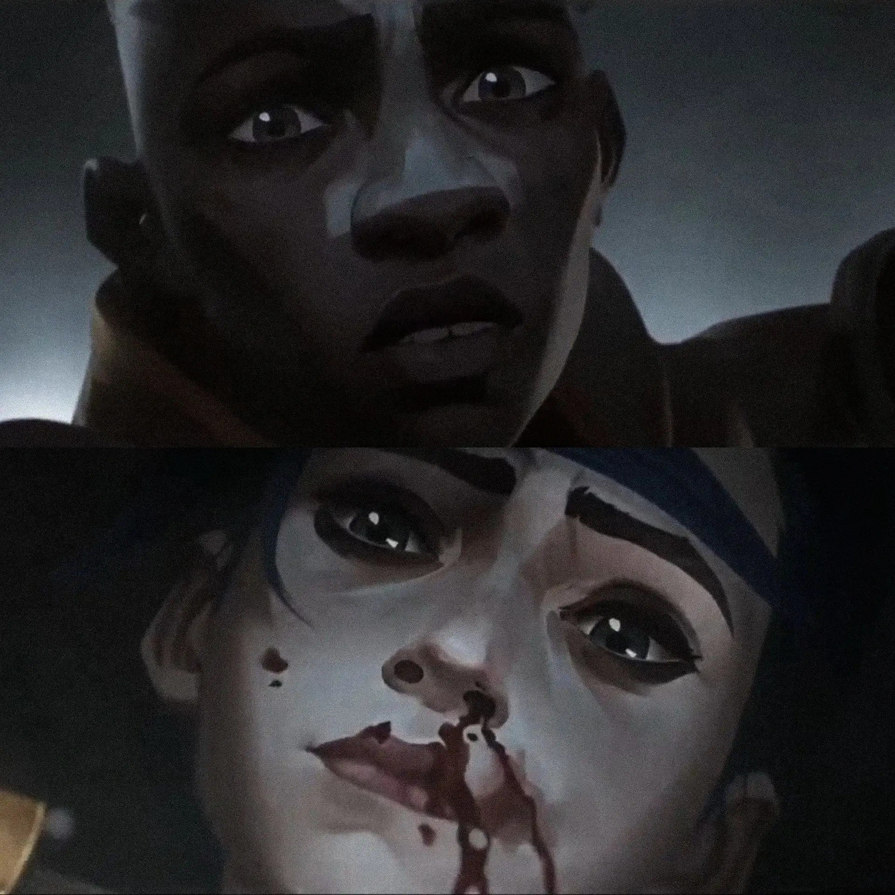

Runeterra is the fictional world where the universe of the Arcane series takes place.
It is a rich and diverse world, made up of unique regions, each with its own
culture, geography, magic, and political intrigues. These regions are often in
conflict or alliance, leading to many captivating stories.

Map of Runeterra with Piltover and Zaun at the center
The end of season 1 of Arcane reaches its climax with a tragic and emotional moment. Jinx,
grappling with an identity crisis and under the influence of Silco's manipulations, makes a decision that
symbolizes her final descent into madness. After a tense confrontation with Vi and Caitlyn, Jinx uses a rocket
launcher powered by hextech technology and fires a rocket directly at the Piltover Council, where the councilors
had just voted to grant independence to Zaun.
The scene ends on a cliffhanger, showing the rocket heading toward the Council building's window, while key members like Jayce and Mel are caught off guard.
This impending explosion symbolizes the irreversible break between Piltover and Zaun and marks a dramatic escalation in both political and personal tensions.
Cliffhanger*: a narrative technique used at the end of an episode, chapter, or film to maintain suspense and encourage the viewer or reader to discover what happens next.

This scene is an obvious reference to Jinx's ultimate ability in the video game League of Legends, called :
SUPER MEGA DEATH ROCKET !
Final scene of season 1
Jinx VS Ekko
The fight between Jinx and Ekko in season 1 of Arcane is one of the most intense and emotional moments of the series.
It takes place on the bridge separating Piltover and Zaun.
Jinx, now consumed by her madness and desire for chaos, faces off against Ekko, a
former childhood friend and a symbol of hope for Zaun. The fight is characterized by
fluid and dynamic choreography, blending elements of hextech technology and street
fighting.
The battle is also a clash of values: Ekko tries to save the Jinx he once knew, while
Jinx seeks to prove her power and break the ties to her past. The confrontation ends when
Ekko manages to overpower Jinx and spares her afterward.

Ma meilleur ennemy (My best ennemy)
The dance scene between Powder and Ekko in the alternate world in season 2 is
undoubtedly one of the most beloved moments by viewers.
One evening, Ekko and Powder reunite to dance and celebrate their love to a brand
new song by Stromae and Pomme, specially created for season 2 of Arcane. This song
has become so popular that it has accumulated around 120 million streams on Spotify
just three weeks after the release of Act III.
The scene is also shown in 4 frames per second, with 4 being the maximum number of
seconds Ekko can rewind time.